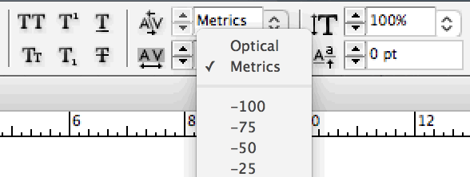

If you use Adobe InDesign—and if you don’t, you can ignore this page—you might have noticed the popup menu that gives you a choice between

Despite the benign-sounding name, optical spacing will mangle your font. It is akin to putting your finest cashmere sweater in the washing machine. So always use the
This setting controls the way InDesign lays out your type:
Metrics spacing relies on the character-spacing information inside the font—that is, the information about character widths and kerning pairs that the font designer put there. When you use metrics spacing, you’re seeing the font the way the designer intended.
Optical spacing completely junks all this character-spacing information. Instead, it applies a patented spacing algorithm that guesses what the width and kerning of every character should be. To no one’s surprise, it often guesses wrong.
In this type designer’s opinion, the spacing of a font—that is, the design of the white spaces—is far more consequential to its appearance than the design of the black shapes. If you buy a professional font (see font recommendations), and then run it through the optical-spacing wringer, you’re throwing away most of what you paid for.
Still, don’t take my word for it. Compare these samples, showing Equity with metrics spacing on top, and optical spacing on the bottom:
In metrics spacing, the spaces between nu and un are visually balanced. But in optical spacing, the u is pushed to the left, so nu looks tighter than un.
In metrics spacing, the spaces between un and no are visually balanced. But in optical spacing, the o (and all rounded letters) are squished closer to flat letters like n.
In metrics spacing, the t has the space it needs on the left, so that a combo like ntit looks even. In optical spacing, the space within nt and it shrinks, becoming darker than the ti space.
“The optical-spacing row on the bottom looks OK to me.” I’ve enlarged these 11 letters to convince you that spacing differences exist. But yes, in a headline, these differences are less bothersome, because there’s still plenty of space between each pair. The real problem arises when you return to ordinary point size. These asymmetries accumulate across hundreds of letter pairs, resulting in body text that’s jittery and uneven.
The goal of spacing letters in a font is to give typeset text an even color, minimizing dark and light spots. Optical spacing does well enough with letters that are symmetric—say, an uppercase H or lowercase n.
But those are easy. As we can see above, achieving the same evenness is harder with asymmetric letters like lowercase a or r or t. But it’s also vital, because these letters occur so frequently in text. This is why humans outperform the machine on font spacing.
A font that has bad spacing (for instance, the client has insisted on such-and-such free font) or;
A font that’s being pressed into service beyond its designed capacity (for instance, a body-text font being used for a headline).
If such an emergency arises, break the glass. Try optical spacing. Judge with your eyes whether it helps.
Otherwise—metrics.
Why do these spacing differences matter more at small point sizes than large? Our eyes perceive light and dark differently as type reaches the lower limit of our ability to detect visual detail. See screen-reading considerations.
Abuse of optical spacing is especially pronounced among American book designers. Magazine and newspaper designers tend to use metrics spacing. But this isn’t surprising—books have smaller design budgets, most of which is spent on the cover, not the interior.
I’ve tried to track down, so far fruitlessly, the origin of the
“optical spacing is better” cargo cult. For instance, was there a popular graphic-design book that first propagated the urban legend, which then became entrenched? (One graphic-designer colleague theorized that Adobe trainers spread the myth.) Contact me if you have clues to share.Still, I blame Adobe for coining the misleading names
“metrics spacing” and“optical spacing” in the first place. If these options had been named accurately—e.g.,“original spacing” and“synthetic spacing”, or “nice spacing” and“shitty spacing”—InDesign users would likely have made better choices.